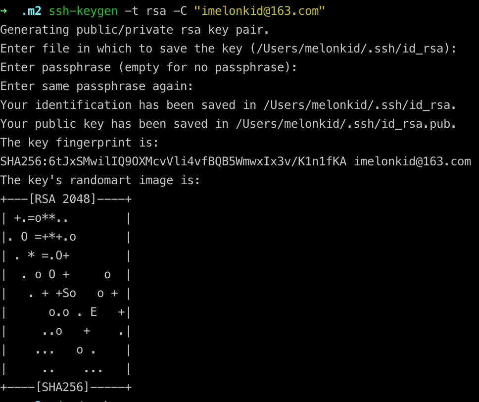
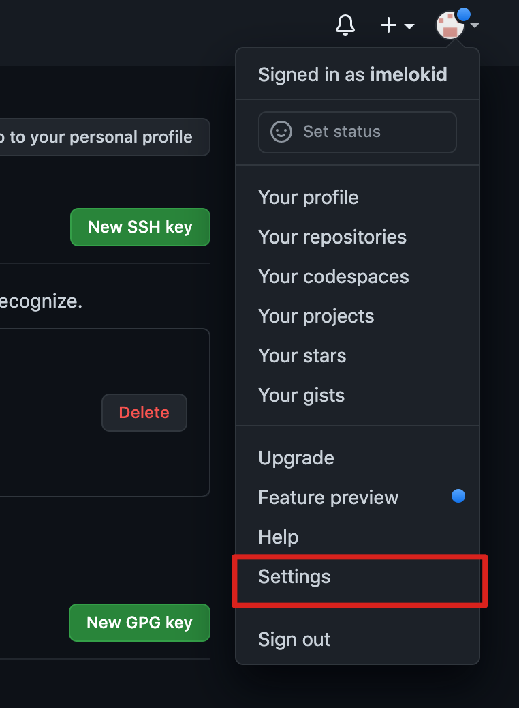
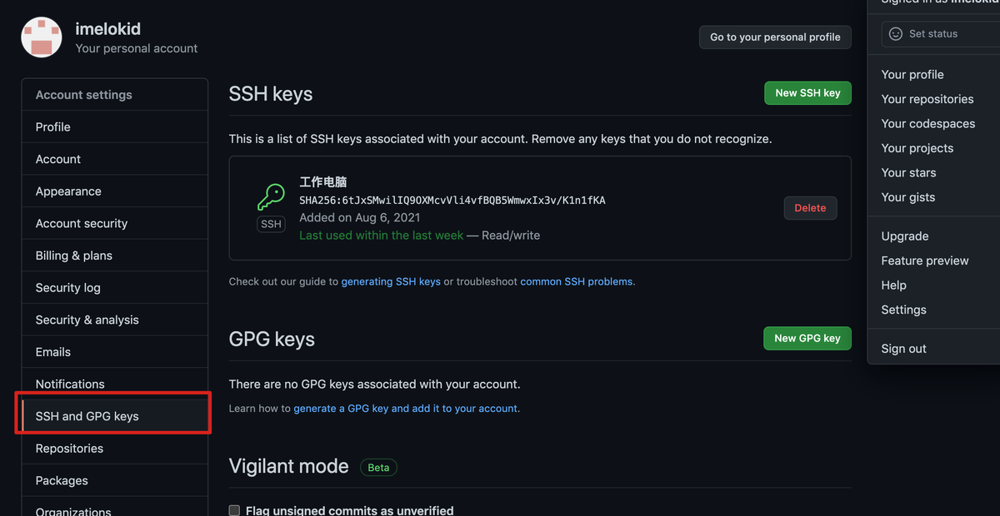
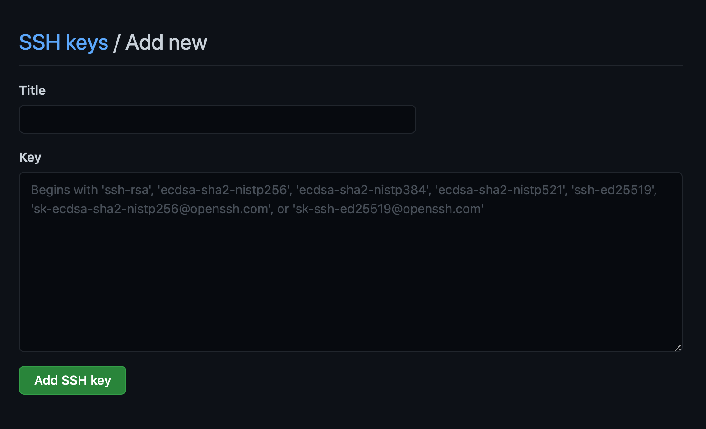
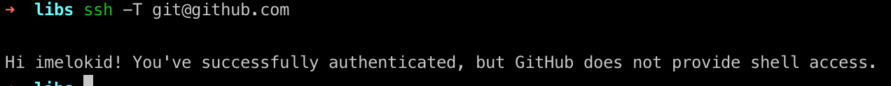

MAC配置GIT&GITHUB环境
安装git
先判断电脑是否已经安装了Git
直接在命令行执行1
git
如果安装过，会输出如下信息1
2
3
4
5
6
7
8
9
10
11
12
13
14
15
16
17
18
19
20
21
22
23
24
25
26
27
28
29
30
31
32
33
34
35
36
37
38
39
40
41
42
43WMBdeMacBook-Pro:~ WENBO$ git
usage: git [--version] [--help] [-C <path>] [-c name=value]
[--exec-path[=<path>]] [--html-path] [--man-path] [--info-path]
[-p | --paginate | --no-pager] [--no-replace-objects] [--bare]
[--git-dir=<path>] [--work-tree=<path>] [--namespace=<name>]
<command> [<args>]
These are common Git commands used in various situations:
start a working area (see also: git help tutorial)
clone Clone a repository into a new directory
init Create an empty Git repository or reinitialize an existing one
work on the current change (see also: git help everyday)
add Add file contents to the index
mv Move or rename a file, a directory, or a symlink
reset Reset current HEAD to the specified state
rm Remove files from the working tree and from the index
examine the history and state (see also: git help revisions)
bisect Use binary search to find the commit that introduced a bug
grep Print lines matching a pattern
log Show commit logs
show Show various types of objects
status Show the working tree status
grow, mark and tweak your common history
branch List, create, or delete branches
checkout Switch branches or restore working tree files
commit Record changes to the repository
diff Show changes between commits, commit and working tree, etc
merge Join two or more development histories together
rebase Reapply commits on top of another base tip
tag Create, list, delete or verify a tag object signed with GPG
collaborate (see also: git help workflows)
fetch Download objects and refs from another repository
pull Fetch from and integrate with another repository or a local branch
push Update remote refs along with associated objects
'git help -a' and 'git help -g' list available subcommands and some
concept guides. See 'git help <command>' or 'git help <concept>'
to read about a specific subcommand or concept.
如果系统提示找不到命令，那么通过如下方式进行安装1
brew install git
brew安装参考之前的文章
创建sshkey&配置git
设置username和email（github每次commit都会记录他们）
1 | git config --global user.name "imelonkid" |
通过终端命令创建ssh key
1 | ssh-keygen -t rsa -C "imelonkid@163.com" |

复制公钥
1 | cat .ssh/id_rsa.pub |
配置github
- 登录Github账号，没有自己注册一个
点击右上角头像->setting
选择SSH and GPG keys
点击New SSH Key
标题随便，KEY就是刚刚复制的那个，保存即可

- 验证配置出现如下提示，表示配置成功
1
ssh -T git@github.com
Hi xxx! You’ve successfully authenticated, but GitHub does not provide shell access.

将本地已有项目PUSH到github
- 到项目根目录
执行git初始化
1
git init
将代码添加缓存区
1
git add .
将代码提交到本地仓库
1
git commit -m "init"
将本地代码关联到远程库
1
git remote add origin git@github.com:imelokid/melon-commons-lang.git
将本地分支关联到远程分支
1
git push --set-upstream origin master
将本地代码提交到远程仓库
1
git push